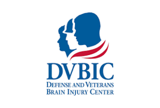

Explore science and research insights through our curated video collection
Browse curated datasets from OpenML for your research and machine learning projects
Our internal pilot demonstrates the importance of tracking patient's cognitive performance in the Military Health System, from enlisment to separation.
Athenahealth's recent survey, which polled 501 physicians and practice administrators across the US, reveals that physicians are increasingly using AI as a clinical support tool, not just for administrative tasks. AI helps quickly look up clinical information (60%), bring lab and imaging results into a single view (55%), and surface recent clinical evidence during patient visits (56%), enhancing decision-making during patient care. However, challenges like data interoperability and the learning curve for AI tools persist.
The University of Idaho has been awarded $1.3 million in grants from the DOD to advance machine learning research for diagnosing PTSD in military personnel. Led by Psychology Professor Colin Xu, the research aims to enhance early detection of PTSD risks and symptoms, thereby improving support for service members and their families. The funding will also support studies on the impact of deployment on families' stress levels, with collaboration from institutions like Walter Reed National Military Medical Center and Northwestern University.
Vietnam Veterans played a pivotal role in establishing modern PTSD treatments by advocating for recognition of their combat trauma, which was initially dismissed by the psychiatric community. Their efforts led to the inclusion of PTSD in the DSM-III in 1980, shifting the perception of trauma from a personal weakness to a response to external events. This change paved the way for specialized VA programs and evidence-based treatments, benefiting today's Veterans.
Low-acuity emergency department utilization declined by 12.4% after the Department of Veterans Affairs expanded access to care via telephone and video in March 2020, researchers reported in JAMA Network Open. The implementation of virtual care was not directly associated with lower ED use across all low-acuity conditions, but ED use declined for major depression, gastroenteritis, conjunctivitis, low-back pain, knee pain and cellulitis.
Suicide among US Veterans and service members remains a critical issue, with Veterans dying by suicide at a higher rate than the general population. The VA and other organizations offer crisis support through the Veterans Crisis Line and Military OneSource, emphasizing the need for these services to act as gateways to long-term care. The VA's strategy includes community partnerships and reducing access to lethal means, while community-based programs like Stop Soldier Suicide provide confidential support.
The Drug Enforcement Administration has extended remote prescribing flexibilities through the end of 2026, allowing controlled substances to be prescribed via telehealth without in-person exams. The flexibility was first enacted in March 2020 and has been extended four times. "I believe our collective focus must now shift toward establishing a permanent, proactive framework that ensures uninterrupted access to care," said Deepti Pandita, chief medical information officer at the University of California Irvine Health system
A large study in the UK found elevated suicide risks among people who had sustained a head injury, suggesting that suicide screening should be a standard component of concussion or traumatic brain injury care. Researchers analyzed two decades worth of records from 1.8 million adults in the UK and found a 21% higher risk for attempted suicide, but not death by suicide, among those who had a head injury, particularly in the first year after the injury. The study was published in the journal Neurology.
Meta is reportedly working on a new artificial intelligence system intended to be as powerful as OpenAI's most advanced model, aiming to help companies build text-generation tools.
A study published in JAMA Network Open shows the increased mortality risk among Veterans with cardiometabolic diseases during extreme heat events. Conducted by researchers at the Veterans Affairs Health Systems Research Center, the study found that Veterans living in high-deprivation areas or experiencing homelessness are particularly vulnerable. The study suggests that these findings could inform the development of heat-response plans, including cooling centers and anticipatory alerts, to mitigate risks during heatwaves..
R2ML has partnered with leading organizations in government, health systems, and research

Connect with our team to discuss how R2ML can help you tackle your biggest data science and research challenges.